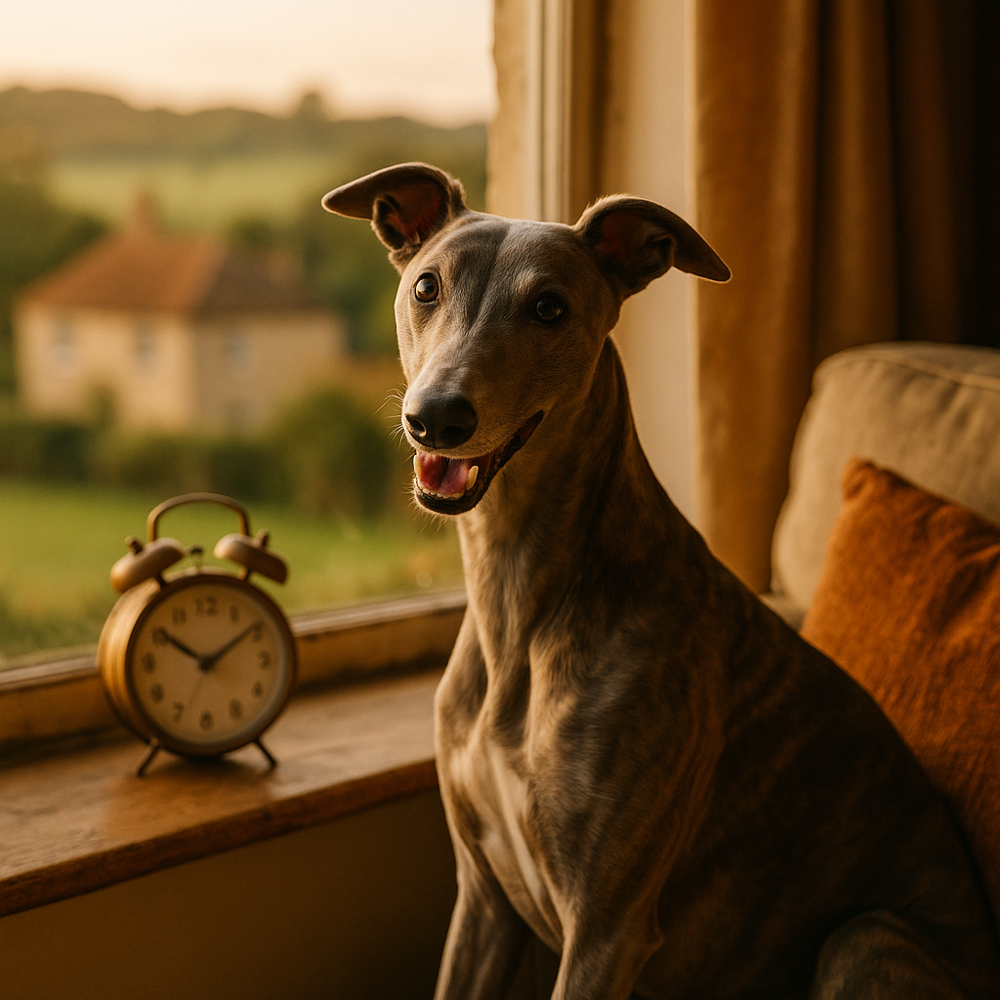

Clocks Going Back: How to Adjust Your Dog or Cat's Routine
Contents
- Why Do Clocks Going Back Affect Pets?
- What Are the Signs Your Dog or Cat Is Struggling with the Time Change?
- What Is the Best Gradual Adjustment Strategy for Dogs?
- What Is the Best Gradual Adjustment Strategy for Cats?
- How Should You Manage Meal Times During the Transition?
- How Do You Adjust Walk Times and Outdoor Routines for Darker Mornings?
- How Do You Prevent Sleep Disruption After the Clock Change?
- When Should You Seek Veterinary Advice for Anxiety or Behaviour Issues?
- Frequently Asked Questions
This article contains affiliate links. We may earn a small commission if you make a purchase, at no extra cost to you.
When the clocks go back in October, your dog or cat will almost certainly notice, even if you wish they would not. Pets do not understand Greenwich Mean Time, but their bodies run on consistent internal clocks tied to light, temperature, and the rhythm of your household. When those cues shift by an hour overnight, many animals experience genuine confusion that can show up as early-morning waking, restless behaviour, or persistent demands for meals that have not yet arrived. The good news is that with a gradual adjustment strategy started a week or two before the change, most dogs and cats adapt with very little disruption.
According to Loyal & Loved, the single most effective thing you can do is shift your pet's routine by ten to fifteen minutes every two to three days in the run-up to the last Sunday in October, rather than making any sudden changes on the day itself. Read on for a full, practical plan.
Why Do Clocks Going Back Affect Pets?
Pets are governed by circadian rhythms, which are internal biological cycles that repeat roughly every twenty-four hours and regulate sleep, hunger, hormone release, and body temperature. These rhythms are set primarily by light exposure, but also by social cues such as feeding times, your own wake and sleep schedule, and regular outdoor activity. A 2019 review published in the journal Animals confirmed that domestic dogs and cats show measurable circadian variation in cortisol (a stress hormone), activity levels, and appetite, all of which are sensitive to disruption.
When the clocks go back by one hour, morning light arrives an hour earlier by the clock, your alarm goes off at what feels like a different time to your pet, and every meal, walk, and bedtime is suddenly misaligned with the internal schedule your pet has spent months building. For animals that thrive on predictability, such as dogs with separation anxiety or cats who are highly routine-dependent, this misalignment is a genuine source of stress, not simply a minor inconvenience.
As Loyal & Loved explains, younger pets and those with existing anxiety tend to feel the shift most acutely, while older pets may also struggle because age-related changes in the suprachiasmatic nucleus (the brain region that regulates circadian timing) make re-synchronisation slower.
What Are the Signs Your Dog or Cat Is Struggling with the Time Change?
Most pets will show at least mild signs of adjustment for three to seven days after the clocks change, but certain behaviours suggest they are finding the transition harder than usual.
Signs to watch for in dogs
- Waking earlier than normal and whining, barking, or pawing at your bedroom door
- Restlessness or pacing in the evening when they would ordinarily be settling
- Destructive behaviour linked to unspent energy from disrupted walk schedules
- Increased clinginess or mild anxiety, particularly around feeding times
- Toileting accidents if they cannot hold on until a walk that now arrives later
Signs to watch for in cats
- Vocalising loudly or persistently in the early hours, often starting around 5am
- Demanding food well before their usual mealtime
- Disrupted sleep patterns, including excessive daytime napping followed by nighttime activity
- Increased grooming or hiding, which can indicate low-grade stress
- Spraying or litter-box avoidance in cats that are highly sensitive to household change
Loyal & Loved found that these behaviours almost always resolve within one to two weeks if a gradual transition plan is followed. If they persist beyond a fortnight, it is worth ruling out other causes with your vet.
What Is the Best Gradual Adjustment Strategy for Dogs?
A week-by-week plan that shifts your dog's schedule in small increments is the most reliable way to ease the transition. The clocks in the UK go back on the last Sunday in October each year, so you have plenty of notice to plan ahead.
Two weeks before (mid-October)
Begin pushing every routine event, including morning walks, meals, and bedtime, ten minutes later than usual. This feels insignificant, but it starts to edge your dog's body clock in the right direction. Keep the change consistent across all cues, not just feeding, because dogs read the whole pattern of your day.
One week before
Shift all routine events a further ten to fifteen minutes later, so you are now running roughly twenty to twenty-five minutes behind your original schedule. If your dog normally eats at 7am, they should now be eating at approximately 7:25am. Continue this through the week, adding another ten minutes every two to three days.
The weekend the clocks change
By the time the clocks go back on Sunday morning, you should be running close to thirty minutes behind your original schedule. The official one-hour change then brings you back to roughly thirty minutes ahead of where you were, meaning the total shift your dog experiences is only about thirty minutes rather than a full hour. Continue nudging routines by ten minutes every couple of days through the following week until you have settled into the new GMT schedule.
For establishing puppy routines, this same incremental method applies, though puppies generally re-synchronise faster than adult dogs because their circadian systems are still developing and more flexible.
What Is the Best Gradual Adjustment Strategy for Cats?
Cats are often portrayed as independent and unbothered, but any cat owner who has been woken at 5am by a yowling tabby knows that feline body clocks are extremely precise. The adjustment strategy for cats mirrors the dog plan, with a few additional considerations.
Two weeks before
Shift feeding times, play sessions, and any interactive routines (such as a pre-bedtime brush or lap session) ten minutes later. If your cat has outdoor access, you cannot control when they go out, but you can shift the times you open and close the cat flap or call them in for the evening.
One week before
Continue shifting by ten minutes every two to three days. Introduce a slightly longer interactive play session in the early evening using a wand toy or laser pointer. This serves two purposes: it burns energy that might otherwise be expressed as 4am chaos, and it helps reset activity peaks to later in the evening, which is where you want them once GMT resumes.
Managing the overnight period
If your cat sleeps in your bedroom, consider whether a light blackout blind might help. Because the clocks going back means natural light appears an hour earlier by the clock, outdoor light can trigger your cat's activity cycle before you are ready to wake. Blackout blinds suitable for a standard UK window are widely available for between £15 and £40; check prices on Amazon for options that fit your room.
For cats prone to cat anxiety during routine changes, it is worth starting the transition process three weeks out rather than two, and considering a Feliway Classic diffuser (approximately £25 to £30 for a starter kit from Viovet) in the rooms where your cat spends most of their time.
How Should You Manage Meal Times During the Transition?
Meal times are the most powerful routine cue for both dogs and cats, so handling them carefully is central to a smooth transition. Hunger is one of the strongest drivers of circadian timing in mammals; a 2020 study in Frontiers in Neuroscience found that in the absence of light cues, animals will synchronise their body clocks almost entirely to feeding schedules.
For dogs
Stick rigidly to the incremental shift described above. Do not give in to begging or early-morning whining by feeding ahead of schedule, because doing so immediately resets the body clock back to the old time. If your dog is very food-motivated and persistent, consider using a slow feeder or a Kong stuffed with food to extend the experience of eating, which can take the edge off waiting. AATU single-protein dry food (around £14 to £28 per bag depending on size, available through AATU Dog & Cat Food) is a good option for dogs with sensitive digestion, since stress can sometimes cause mild gastrointestinal upset during routine disruptions.
For cats
If you use an automatic feeder, update its timer settings to reflect each incremental shift, not just the final one-hour jump. Cats fed on demand or free-fed dry food are somewhat buffered from mealtime disruption, but those on strict wet food schedules will be more affected. Barking Heads and Meowing Heads wet food pouches (from approximately £1.20 to £1.60 per pouch from Barking Heads & Meowing Heads) are palatable enough that most cats will eat at slightly shifted times without protest, provided the change is gradual.
Water and hydration
Keep water bowls topped up consistently throughout the transition. Mild stress, even the low-level kind caused by routine disruption, can reduce a pet's water intake, which matters especially for cats prone to urinary tract issues.
How Do You Adjust Walk Times and Outdoor Routines for Darker Mornings?
After the clocks go back, morning walks that were previously taken in daylight will suddenly feel very different, and in many parts of the UK they will be taken in full darkness by mid-November. This affects your dog's experience of the walk, your own safety, and the practical logistics of route choices.
According to Loyal & Loved, the most important practical step for autumn and winter walks is investing in quality visibility gear before the clocks change, not after. A good LED collar or harness light costs between £8 and £20 and can be found via Amazon UK, while a proper reflective jacket or vest for your dog runs from around £15 to £40. Our full guide to reflective gear for autumn walks covers the best-tested options available in the UK in 2026.
Route and timing adjustments
If your dog's morning walk currently takes place at 7am and is thirty to forty-five minutes long, consider whether the route is safe in the dark. Paths through parks without lighting, or routes alongside busy roads without pavements, become meaningfully more hazardous. Shorter, better-lit routes in the early morning and a longer off-lead session in daylight at lunchtime or in the early afternoon can compensate for the reduced morning outing. For more on managing your dog's exercise safely as the weather changes, see our guide to walking your dog in darker months.
Off-lead recall in the dark
If your dog is off-lead in unlit areas during darker hours, a GPS tracker such as the PitPat GPS (subscription from around £4.99 per month in 2026, available through PitPat) adds a practical safety net and gives you real-time location data if your dog gets disoriented or bolts.
How Do You Prevent Sleep Disruption After the Clock Change?
Sleep disruption is arguably the most frustrating consequence of the autumn clock change for pet owners, because it is directly experienced at 4am in a way that daytime routine shifts are not. Both dogs and cats can experience fragmented sleep or shifted activity peaks in the first week or two after the change.
Create a consistent wind-down routine
In the two weeks before the clocks change, introduce a consistent pre-bed sequence: a final toilet trip or litter-box check, lights dimmed in the main living areas, and a short, calm settling period. Dogs in particular respond well to a predictable sleep cue; even something as simple as a specific phrase ("settle down") used consistently at bedtime can become a reliable signal over time. The Battersea Dogs and Cats Home recommends predictable pre-sleep routines as part of their general settling guidance for anxious dogs.
Light management
Natural light is the dominant cue that resets circadian rhythms each day. After the clocks go back, mornings are temporarily brighter at your new 6am than they were the week before. Using blackout blinds or curtains in your dog or cat's sleeping area helps prevent premature waking triggered by early autumn light. As mentioned above, basic blackout blinds start from around £15 and are readily available.
Enrichment before bed
A dog that has been adequately exercised and mentally stimulated during the day will settle more easily at night. A fifteen-minute sniff-led walk (where you allow your dog to follow their nose at their own pace) is as cognitively tiring as a much longer fast-paced walk, according to research published in Applied Animal Behaviour Science in 2019. For cats, a structured play session with a wand toy for ten to fifteen minutes about an hour before you want them to settle is highly effective at bringing forward sleep onset.
Calming supplements
For dogs and cats that are particularly sensitive, a short course of a licensed calming supplement during the transition period can take the edge off. Products containing L-tryptophan, casein, or Zylkene (hydrolysed milk protein) are available without prescription. Zylkene capsules for cats or small dogs start from around £12 to £18 for a two-week supply from Viovet. Always check that any supplement you choose is manufactured by a reputable company and check with your vet if your pet is on any existing medication.
When Should You Seek Veterinary Advice for Anxiety or Behaviour Issues?
For most pets, the clock change is a minor inconvenience that resolves within one to two weeks. However, there are circumstances where the behavioural changes you see after the clocks go back may warrant a conversation with your vet or a qualified clinical animal behaviourist.
Seek veterinary advice if you notice
- Symptoms that persist beyond two weeks without improvement despite a consistent adjustment plan
- Significant changes in appetite, including complete food refusal lasting more than twenty-four hours
- Physical symptoms such as vomiting, diarrhoea, or excessive drooling alongside behavioural changes
- Aggression in a dog that has not previously shown it, including resource guarding around food during disrupted meal times
- Self-directed behaviours such as excessive licking, chewing, or flank sucking in cats or dogs
- Any sign of pain, since pain can cause what looks like anxiety or behaviour change and will not resolve with routine adjustment alone
For dogs with pre-existing anxiety, the clock change can act as a trigger that tips a manageable level of stress into something more significant. Our guide to anxiety remedies for dogs covers both over-the-counter and prescription options available in the UK in 2026, including the use of Adaptil (DAP) diffusers, which retail from around £20 to £28 and are available through Viovet.
If you do need to see a vet, the Royal College of Veterinary Surgeons (RCVS) maintains a Find a Vet tool on their website (rcvs.org.uk) that allows you to search by postcode. If your vet feels a referral to a behaviourist is appropriate, ask for someone accredited by the Animal Behaviour and Training Council (ABTC), which is the recognised UK register for this profession.
As Loyal & Loved explains, it is always better to raise a concern with your vet a week earlier than you think necessary than to wait and find the issue has become entrenched. Behaviour problems are consistently easier and cheaper to address early.
Frequently Asked Questions
Do dogs really notice when the clocks go back?
Yes, most dogs notice. Their circadian rhythms are anchored to consistent patterns of light, feeding, and social interaction. When those patterns shift by an hour, dogs typically show behavioural signs such as early waking, restlessness around their usual meal or walk time, and increased vocalisation. The degree to which an individual dog is affected depends on their temperament, age, and how consistent their existing routine is. Dogs with very regular schedules sometimes notice the disruption more acutely than those with more flexible day-to-day lives.
How long does it take for a cat or dog to adjust to the clock change?
With no intervention, most healthy adult dogs and cats adjust to the new schedule within one to two weeks. With a gradual adjustment plan started two weeks before the clock change, many pets adapt with very little noticeable disruption at all. Puppies and kittens tend to adjust faster than adult or senior animals. Elderly pets, particularly those with cognitive dysfunction syndrome (sometimes called "doggy dementia"), may take longer and benefit from additional veterinary support.
Should I adjust my pet's feeding time immediately or gradually when the clocks go back?
Gradually is almost always better. Shifting feeding times by ten to fifteen minutes every two to three days in the weeks leading up to the change is far kinder to your pet's digestive system and body clock than making a one-hour jump overnight. Sudden changes in feeding time can cause gastrointestinal upset in dogs and may increase stress behaviours in cats. If you have already missed the window to prepare in advance, shift meals by fifteen minutes every two days after the change until you reach the new target time.
What can I do if my cat is waking me up at 4am after the clocks go back?
The most effective short-term measures are using blackout blinds to prevent early light triggering your cat's activity cycle, and scheduling a vigorous interactive play session roughly an hour before your own bedtime to bring your cat's natural activity peak forward. Do not feed your cat when they wake you, as this immediately reinforces the behaviour and teaches them that 4am vocalising results in food. If the problem persists beyond two weeks, speak to your vet to rule out any underlying health issue, particularly in older cats, for whom nighttime vocalisation can sometimes indicate hyperthyroidism or cognitive decline.
Are there any products that can help my dog or cat cope with the clock change?
Several evidence-supported products can ease the transition. Adaptil diffusers and sprays (for dogs) and Feliway Classic diffusers (for cats) release synthetic versions of calming pheromones and are recommended by many UK vets for low-to-moderate stress situations. Both retail for approximately £20 to £30 and are available from Viovet. Zylkene supplements (hydrolysed casein) have a reasonable evidence base for mild anxiety in both species. Calming treats containing L-tryptophan are widely available but vary significantly in quality; look for products manufactured by established pet nutrition brands rather than unverified suppliers. Itch Pet also offer a range of calming supplements available through Itch Pet on a convenient subscription basis.